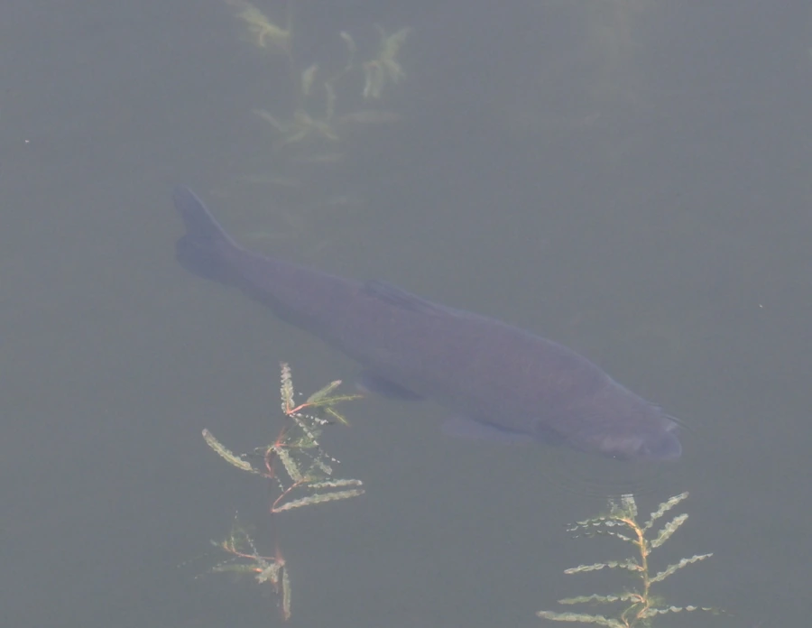

鱼类 · 动物界
青鱼 Mylopharyngodon piceus

中国“四大家鱼”之一，体色青黑、个体硕大，靠咽喉部的臼齿状齿磨碎螺蛳，是四大家鱼中体型最大、肉质最紧实的一种。
- 分类
- 门脊索动物门纲硬骨鱼纲目鲤形目科鲤科属青鱼属
- 栖息环境
- 江河、湖泊和水库的中下层，喜水底有螺蛳和蚌类的水域
- 地理分布
- 中国长江、珠江、黄河、黑龙江等水系，以长江中下游最为常见
- 保护级别
- 暂无评估；中国未列入国家重点保护野生动物名录（四大家鱼之一）
物种志
青鱼体呈圆筒形，腹部圆，头稍平扁，吻部尖，口端位，没有须。体色青黑或灰黑，背部颜色较深，腹部灰白，各鳍灰黑色。成鱼体长一般 60–100 cm，体重 5–15 kg，最大个体可超过 70 kg，是四大家鱼中体型最大的一种。它最特别的地方是咽喉部下咽齿粗大呈臼齿状，专门用来压碎螺壳。
青鱼是底栖性肉食鱼类，主食螺蛳、蚌、蚬等软体动物，也吃水生昆虫和甲壳类，多在水体中下层活动，性格沉稳，不像鲢鱼那样善跳。它一般 5–6 龄性成熟，繁殖期在 5–7 月，需要江河涨水的刺激，卵为漂流性，在长江中要上溯到产卵场繁殖。青鱼原产中国长江、珠江、黄河、黑龙江等水系，是四大家鱼中肉质最紧实的一种，人工养殖历史已有近千年。目前它没有IUCN 的正式评估，中国未将其列入国家重点保护野生动物名录。
形态与习性
- 食性底栖肉食性，主食螺蛳、蚌、蚬，也吃水生昆虫和甲壳类
- 体长一般 60–100 cm，最大可超过 1.5 m
- 体重常见 5–15 kg，最大可超过 70 kg
- 繁殖5–6 龄性成熟，5–7 月产卵，需涨水刺激
- 咽齿下咽齿粗大呈臼齿状，专门用来压碎螺壳
- 习性多在水体中下层活动，性格沉稳，行动较缓慢
趣味知识
- 青鱼的下咽齿粗大如臼齿，专门用来压碎螺蛳壳，因此俗称“螺蛳青”。
- 它是四大家鱼中体型最大、生长最慢的一种，大个体可超过 70 kg。
- “四大家鱼”指青鱼、草鱼、鲢鱼、鳙鱼，都是中国传统的淡水养殖鱼类。